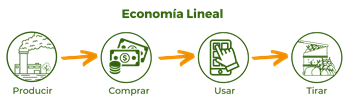
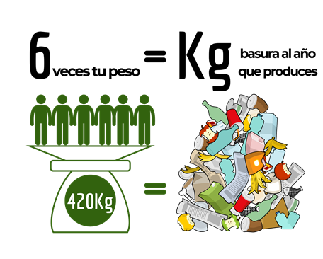
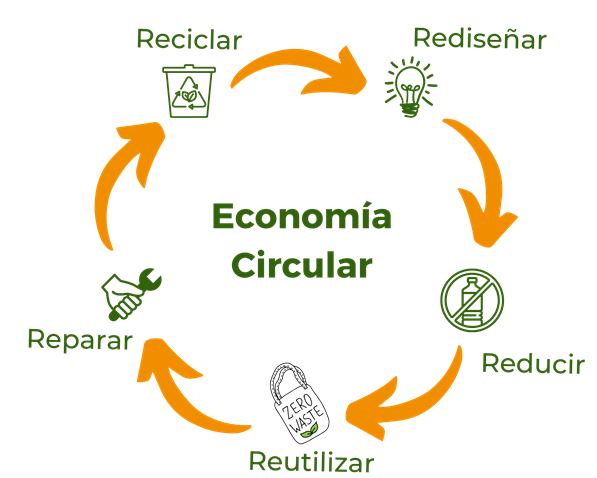

¿Has oído a hablar de la economía circular?
Últimamente, se escucha mucho hablar sobre la economía circular en los periódicos, noticias, empresas, pero ¿qué es?
Hasta hace poco, se hablaba de un mundo de usar y tirar. Cuando queremos el último teléfono o computadora, solemos botar el viejo. Cuando nuestra ropa se rompe o ya no está de moda, compramos nueva. En otras palabras, las empresas producen, nosotros compramos y al poco tiempo todo va a parar a la basura.

Pero esta filosofía de vida tiene consecuencias catastróficas para el planeta. Hoy en día, generamos demasiados residuos. Si usted ronda los 70m kilos, sepa que produce al año más de seis veces su propio peso en basura*1. Pero ¿y si hubiera una forma diferente de hacer las cosas?

Fijémonos en los animales o las plantas. La energía la proporciona el Sol, los desechos de una especie son el alimento de otra y, cuando las cosas mueren, sus nutrientes regresan al suelo, en un círculo de vida*2.
La economía circular es un enfoque de vida, donde todo tiene valor y nada se desperdicia.

En la economía circular:
Recuerda, en tus acciones está cambiar el mundo.
*1 Ripa, J. (14 Juliol 2016) ¿Cuántos kilos de basura generamos al segundo?, El País.
*2 All about the circular economy. National Georgraphic Kids. Reino Unido. Recuperado de: https://www.natgeokids.com/